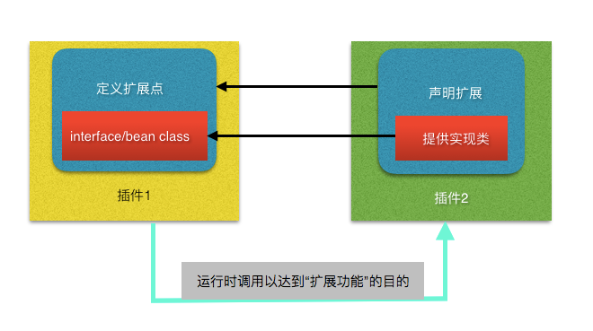
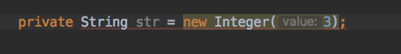
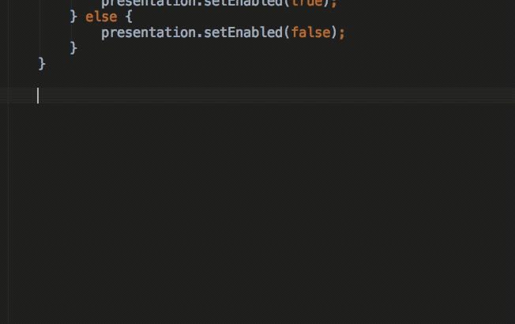
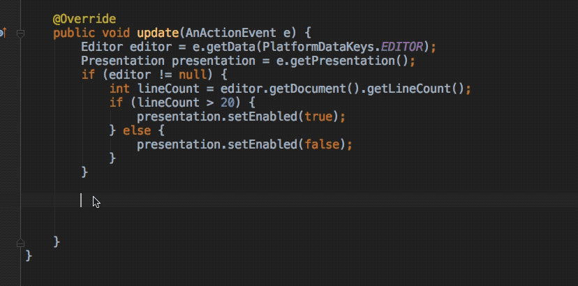
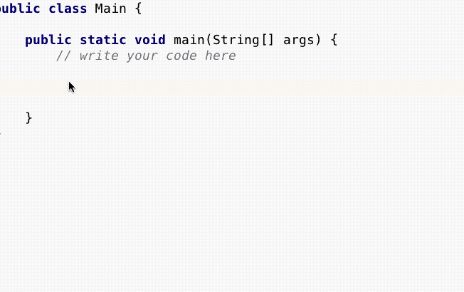

如果说自己定义Action并实现相应的功能逻辑是造轮子的话，那么实现Extensions就是使用别人的轮子了，简单快速实现复杂的功能！
定义
Extensions 和Extension Points是Intellij平台提供的一套供插件之间或者是插件与平台核心功能之间通信的接口。
Extension points
一个插件提供给其它插件扩展自己功能的入口点，通过定义接口来约定沟通的方法，通俗点说就是造好轮子等别人来用。
Extensions
一个插件声明一个Extension，并通过对应的Extension Point实现相应的功能，通俗的说就是复用别人造好的轮子。
关系图
如果文字表达得不够明白，看一下以下的说明图应该能加深理解，毕竟一图胜千言

声明Extension和Extension Point
Extension和Extension Point都需要在plugin.xml声明，声明的语法如下
Extension Point
|
- name 此Extension Point的名字
- beanClass/interface 提供的接口，定义与Extension的交互方式
Extension Point声明的方式有两种，第一是通过interface的方式，此方式定义一个java接口供扩展方实现；第二是beanClass的方式，其定义一个java bean，并在扩展方声明Extension的时候，由扩展方提供java bean的属性，这里不明白的话先看下面Extension的声明。
Extension
声明通过interface方式定义的Extension
|
Extesion的声明应该被包裹在<extensions>标签下
<extensions>标签的defaultExtensionNs属性的值是对应Extension Point的插件id，但如果这个Extension Point由Intellij提供，则是“com.intellij”，插件的id可以在plugin.xml文件查看- 其中的标签的名字是Extension Point的name，例如要用到上面声明的Extension Point，则是
<ConcreteExtensionPoint1>
这里内容很简单，就是实现接口，通过implementation属性提供接口
声明通过beanClass方式定义的Extension
|
这里language和implementationClass实际上是java bean的属性，下面是这个Extension Point的beanClass的内容
|
其中language和implementationClass上加了@Attribute注解，加了这个注解的属性需要由Extension在声明时提供
|
实例
一般情况下都是我们写的都是功能比较简单的小插件，除非是专门写插件的软件公司，否则很少情况下会在插件里定义Extension Point供别人使用，所以重点是怎样使用别人的Extension Point，尤其是系统提供的Extension Point，那可是系统的核心功能。（好吧是其实我不会写Extension Point（-_-））
通过Extension可以做什么？
先看三张图



第一张图是代码编辑器的错误提示，第二张图是live template，第三张图是系统提供的postfix completion，相信这些功能我们平时都不少用，其实这些功能我们都可以通过Extension来自定义的！
这里提供一个livetemplate的实例和推荐一个postfix completion的项目
live template
想当年Eclipse用得飞起的时候“syso”打印字符串到控制台的代码补全用得非常顺手，刚转到Intellij平台的时候还有点不适应呢，现在借助live template我们也能实现一个Intellij版本的“syso”补全
首先，找到Extension Point，这里的Extension Point是系统提供的defaultLiveTemplatesProvider，这样我们可以在plugin.xml中声明我们的Extension
|
这个Extension Point是通过interface声明的，所以提供实现类MyTemplateProvider如下
|
内容很简单，就是返回一个文件的路径，是相对于resources文件夹的相对路径，不要后缀名，绝对路径是 projectpath/resources/templates/mytemplatefile.xml
也就是说我们只要在这个文件里按语法定义好live template就好了，重点也是在定义live template上，mytemplatefile.xml的内容如下
|
一个<template>标签定义一个live template，name属性和value属性就是livetemplate的缩写和缩写展开对应的内容，这里只展示实现Extension的逻辑，具体怎样自定义live template可以参考相关文档
https://www.jetbrains.com/help/idea/live-templates.html
下面是这个小demo的运行效果

postfix completion
Android Studio和IDEA提供了一部分postfix completion，可惜的是并没有提过我们在IDE里自定义postfix completion的入口，但是可以通过插件增加自己的postfix completion，其原理也是利用系统的Extension Point
有兴趣的朋友可以看看这个我参与的插件项目
其中用到的Extension Point是codeInsight.template.postfixTemplateProvider
问答
系统有那么多的功能，我怎么知道它有没有Extension Point或者它的Extension Point是什么？
不用担心，Intellij的文档提供了下面的Extension Point列表
有Extension Point，但是不会用怎么办？
查看其他插件的源码，例如那些提供智能补全的插件，都是通过系统的Extension Point完成的，所以可以推测一下自己常用的插件里有没有自己需要使用的Extension Point来学习怎样使用